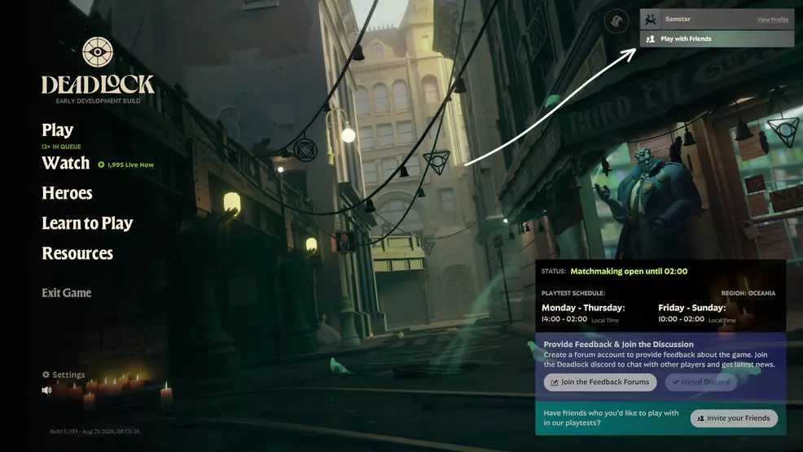

Esta atualização trouxe várias melhorias, incluindo a introdução de um novo herói, Mirage, e a implementação de um sistema inicial de deteção de batota. Abaixo estão algumas das principais mudanças:
Além das mudanças nos heróis e nos sistemas, também foram implementadas novas opções para lobbies privados e cheats. Agora é possível personalizar completamente os jogos privados e até rever replays pós-jogo.
| Funcionalidade | Descrição |
|---|---|
| Cheats em Lobbies Privados | Os lobbies agora suportam a ativação de cheats e escolha de servidores específicos. |
| Replays Pós-jogo | Replays estão totalmente disponíveis nos lobbies privados. |
Para mais informações sobre as atualizações, visita as Notas da Atualização.
Esta atualização melhora significativamente a experiência para jogadores, especialmente com a introdução do sistema de deteção de batotas. Segundo as Notas Oficiais, este é apenas o início de um sistema mais robusto no futuro.